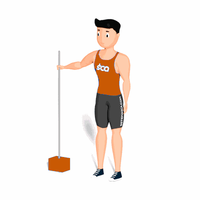

Agachamento Sissy Livre

O exercício trabalha a hipertrofia dos músculos do quadríceps de forma isolada, porém é recomendado a realização do exercício por praticantes mais experientes e preparados fisicamente.
Ficha Técnica
Tipo: Musculação
Grupo Muscular: Perna
Aparelho: Nenhum
Músculos: Nenhum
Como realizar
- Com os pés apontados para frente na largura dos ombros, segure com uma das mãos em uma barra ou apoio vertical na altura do seu quadril;
- Com quadril e a cintura retos, dobre os joelhos para permitir que o corpo caia para trás à medida que os joelhos avançam;
- Permita que os calcanhares subam do chão;
- Abaixe o corpo até que os joelhos estejam quase totalmente flexionados ou próximos ao chão;
- Retorne à posição inicial estendendo os joelhos à medida que os calcanhares retornam ao chão.
 RC STORE
RC STORE